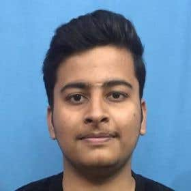

|  | My name is Yuvraj Kumar Singh, and I am currently 20 years old. I am pursuing a Bachelor of Technology (B.Tech) degree in Computer Science and Engineering (CSE) at SRM Institute of Science and Technology. I am currently in my third year of study, where I have been gaining valuable knowledge and skills in the field of technology. During my academic journey, I have had the opportunity to apply my theoretical knowledge in a practical setting. I had the privilege of interning at Diginique Tech Labs, where I worked as a data analytics intern. During my time there, I had the chance to work on a significant project involving Machine Learning. This experience allowed me to delve into the realm of data analysis, applying algorithms and techniques to gain insights and drive meaningful results. Apart from my academic pursuits, I am also an active member of the National Cadet Corps (NCC). Being a part of NCC has instilled discipline, leadership, and a sense of responsibility within me. Additionally, I have a passion for cricket and actively participate in the sport. It not only serves as a recreational activity but also promotes teamwork, strategic thinking, and physical fitness. As an individual, I am driven, ambitious, and continuously strive for excellence in everything I undertake. I have a strong interest in technology, particularly in the fields of data analytics and machine learning. I am always eager to learn and expand my knowledge in these areas, as they hold great potential to shape the future. Overall, my academic pursuits, professional experience, and extracurricular involvement have contributed to shaping me into a well-rounded individual. I believe in continuous growth, and I am excited about the opportunities that lie ahead in my academic and professional journey. |
Maharana Pratap was the son of Maharana Udai Singh of the Sisodiya clan of Rajputs, the rulers of Mewar. Pratap became the ruler of Mewar against his father’s wish, who had appointed his favourite son Jagmal as his successor. However, the senior nobles of Mewar decided that Pratap, the first son and rightful successor should be crowned king. Moreover, Maharana Pratap was said to be a man of strong Rajput character, he was far more brave and chivalrous. His kind heartedness and just decision making won the hearts of even his enemies. He is the only ruler of India that did not give in to the Mughal rule, and for that he is the most celebrated ruler of the country to this day. After the famous battle of Haldighati, Maharana Pratap’s own brother, Shakti Singh, who had joined the Mughals helped him escape the battlefield, as his beloved and trusted horse Chetak was wounded in his hind leg and Jhala Man a noble was wearing the Maharana’s crown as decoy. Chetak, Maharana Pratap’s trusted horse, delivered him to safe grounds before breathing his last. Pratap had to take refuge in the Aravalli hills. The Bhil tribals of the Aravallis supported Maharana during times of war, and helped him in living off the forests during times of peace. In exile, Pratap spent considerable time perfecting war tactics like guerilla warfare, harassing the enemy and light horse tactics which helped him win back Mewar. Col. Tod, the famous British antiquarian, gave Pratap the title of ‘Leonidas of Rajasthan’. In one of his writings on Pratap, Tod mentioned that, “There is not a pass in the Alpine Aravalli that is not sanctified by some deed of Maharana Pratap – some brilliant victory, or oftener, more glorious defeat.” It is believed that during his exile, Maharana Pratap, was at breaking point. A Rajput poet and warrior, Prithiraj of Bikaner who was at Akbar’s court sent a letter to the Maharana giving him strength, and steered him to carry on his war efforts.
June 2023-Present
July 2022-September 2022
6 months
3 Schools and 1 university